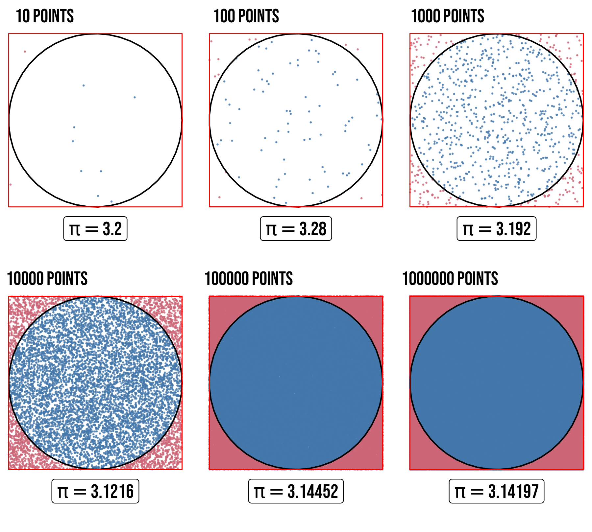
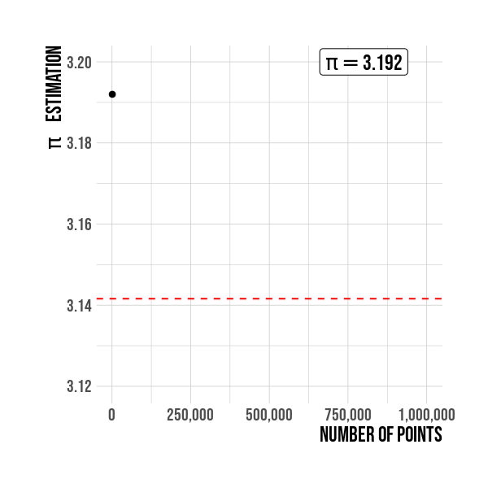

{kind=link}
Simulations: 1 000 000 million points
To estimate \(\pi\) we are going to plot randomly points using the runif() function and then count how many of them are inside the circle. The canvas in this case is the x-y plane, a square of side 2 units and an inner circle of radius 1 are plotted centered in the origin \((0,0)\). The number of points inside the circle satisfies the condition \(\sqrt{x^{2}+y^{2}} \leq r\), where \(r\) has to be 1 in our case, the radius of the unit circle. The idea now is to estimate \(\pi\) as increasing the number of points, in the code below if the point falls inside the circle was assigned \(1\) otherwise it is \(0\).
In figure 3, \(\pi\) is estimated for 6 different simulations with different sample size to assess how the estimates vary.

Figure 3: Estimation of \(\pi\) for different point quantities. Points are randomly scattered inside the square, some fall within the unit circle.
Results for some values of \(\pi\) are shown in the Table 1.
| Number of points | Estimation of \(\pi\) |
|---|---|
| 10 | 3.200000 |
| 100 | 3.280000 |
| 1000 | 3.192000 |
| 10000 | 3.121600 |
| 100000 | 3.144520 |
| 1000000 | 3.141972 |
Figure 4 represents the same results shown previously but as an animation, this allow us to understand better the how pi accuracy increases as the sample size do same.

Figure 4: Numerical approximation of \(\pi\).
Figure below show R pi constant value as an horizontal red line. It is seen the convergence to the constant pi is related with the sample size. A sample size of 1,000,000 is used for this simulation.

Figure 5: Estimation of \(\pi\) by sample size. The value is better as the sample points increases.
:warning: NOTE: For the curious people in
Rthe \(\pi\) number is defined by default up to 48 digits.3.141592653589793115997963468544185161590576171875
I hope this short post had been helpful to you. If you have any opinion, suggestion or critic all comments are received, please write me.
Until next time!